基本操作
http://yu571510000(0).my3w.com/wp-admin/
- 操作地址：thin.....com/wp-admin/
- 数据库reset 安装插件Database Reset -> 工具 -> Reset Tables
- 指定某一页面为首页
外观 -> 自定义 -> 主页设置 也可以在：设置 -> 阅读中设置 页头
页头属于公共区域，不是在页面中修改，页头分为两部分区域，一个是顶部，第二个是logo,菜单小图标等 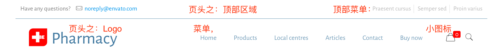- 页头之顶部区域：BeTheme > Theme Option > Menu & Action Bar (菜单和操作栏, Menu就是菜单，Action Bar即页头的顶部)
页头的搜索小图标
- BeTheme > Theme Options > Header & Subheader (页眉和子页眉) > Extras (扩展) > Search
页头的购物车小图标
- BeTheme > Theme Options > Blog, Portfolio & Shop (博客，作品集&商店) > Shop 把最下面的Cart | Icon输入内容置空即隐藏
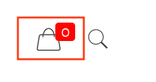
- 页头上的操作按钮（菜单栏右侧）
- BeTheme > Theme Options > Header & Subheader (页眉和子页眉) > Action Button (操作按钮) 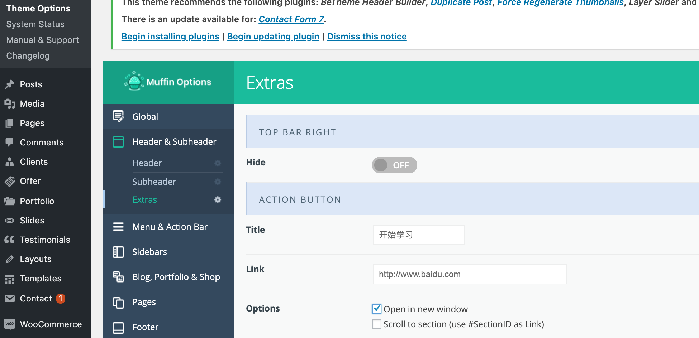
- 页头悬浮的取消
- BeTheme > Theme Options > Header & Subheader > Header > Sticky
- 顶部菜单：Appearance > Menus，这里的Social Menu Top（顶部社交菜单）即是： 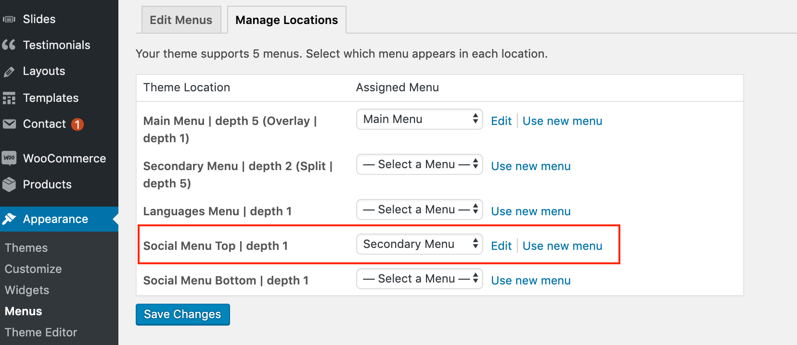 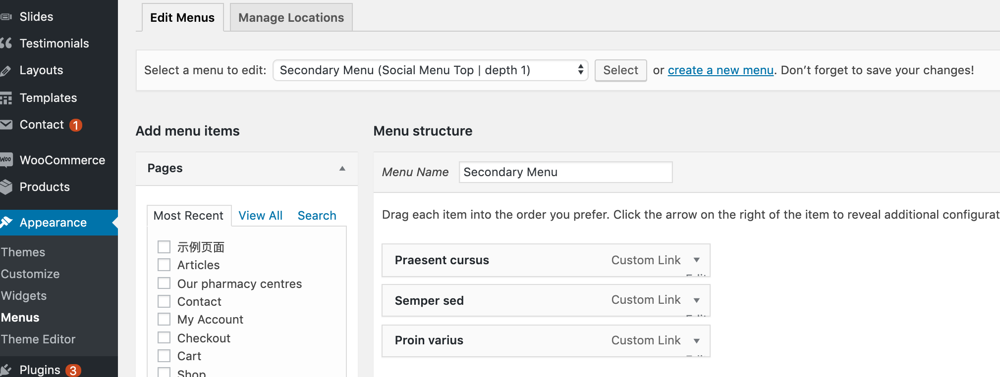
页脚
- BeTheme > Theme Options > Footer（页脚）可以修改Layout、Style、Padding、Position...
- 页脚内容修改：Appearance > Widgets > Footer | #1234
- 页脚小图标的修改：BeTheme > Theme Options > Blog, Portfolio & Shop > Shop > 最下面的Cart | Icon > 选中某一Icon, 名字会显现出来，然后在代码中比如：
<li><i class="icon-layout" style="color:#4179a0">改class 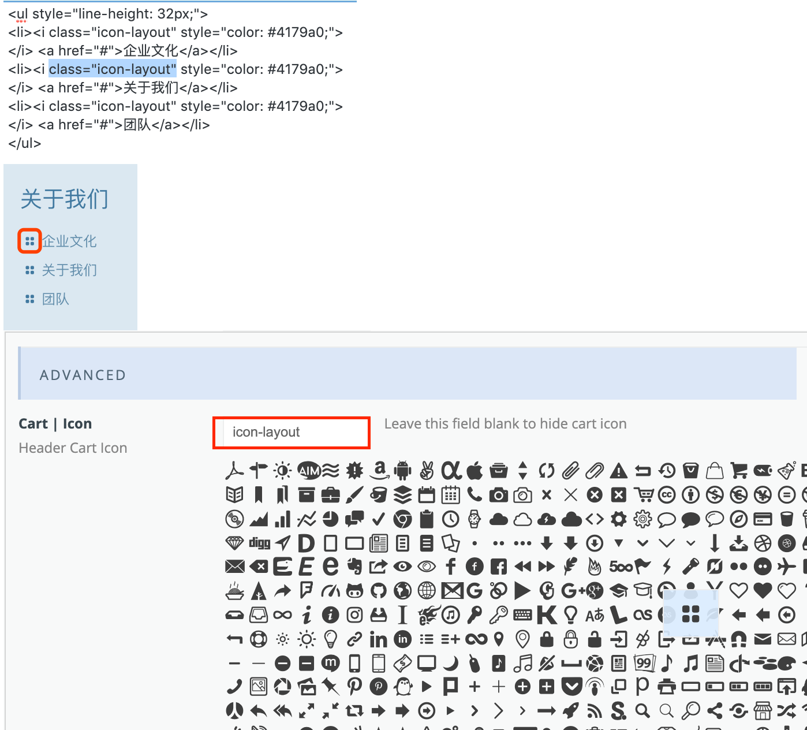 - 页脚的版权信息 BeTheme > Theme Options > Footer > Advance > Copyright
- 页脚的回到顶部按钮 BeTheme > Theme Options > Footer > Extras > Back to Top button
网站Logo标志
- BeTheme > Theme Options > Global(全局) > Logo 其中Retina Logo的宽高都是普通Logo的2倍，最好是png图片, png图片可以透明
- 全局颜色修改
- BeTheme > Theme Options > Colors
- 编辑器常用名词
- Section: 区，区域，一篇博文就是由许多Section组成
- Wrap: 一个Section下可以添加多个Wrap, Wrap表示列或外套
- Item: 一个Wrap下可以添加多个Item, Item表示项或元素。Item有很多形式，比如Image, Button以及常用的Column
- Divider: 分隔符
- Wrap: 一个Section下可以添加多个Wrap, Wrap表示列或外套
- Section: 区，区域，一篇博文就是由许多Section组成
- 菜单
- Appearance > Menus 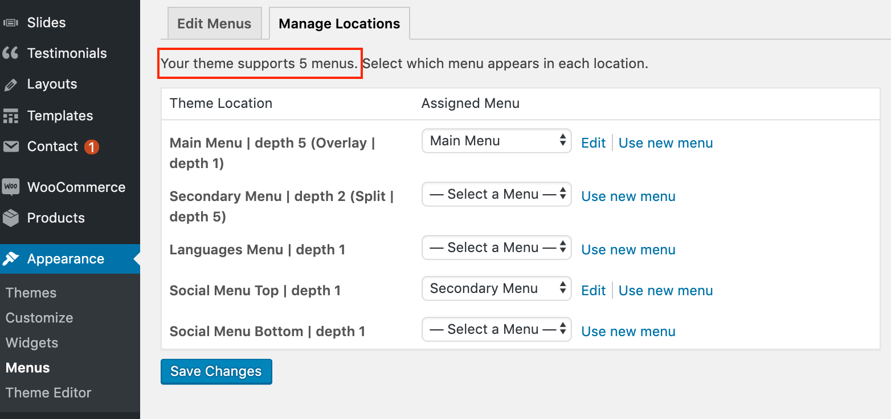 可以编辑新建多个菜单，但BeTheme主题仅支持在5个地方显示菜单
- 幻灯片
- 商城插件
- 广告位
- 文章(Posts)
- 文章位置：BeTheme > All Posts
- 文章分类
- BeTheme > Posts > Categories > Name（更改名字） Slug(别名)
- 博客幻灯 (Blog Slider)
- 在Blog Slider中有一个Category, 即博客的类别，选中哪一个类别，就表示使用这个类别下面的文章 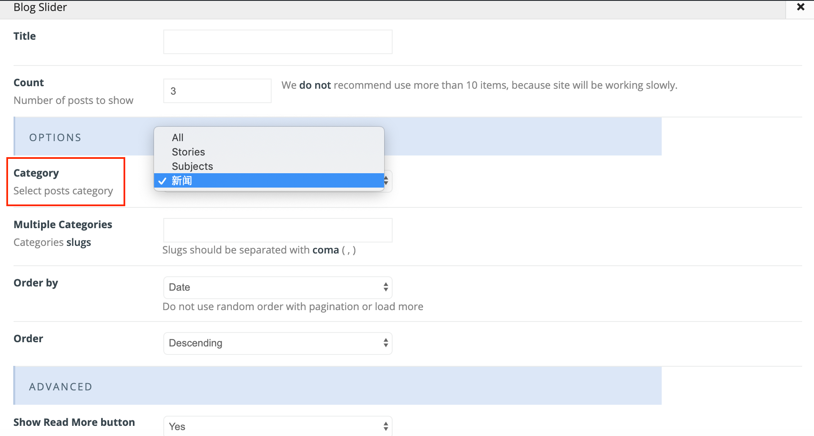
- 类别在BeTheme > Posts > Categories下设置
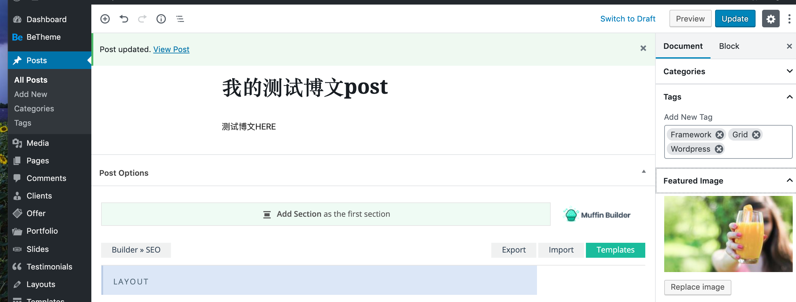
- 分频器（Divider）
- 分频器只是用来撑高
- 页脚 在主题选项的小工具里面修改
- 分类目录
- 编辑页面
页面 -> 找到要编辑的页面，点击编辑 Muffin Builder是BeTheme主题自带的编辑器 注：当把某一页面加入菜单时，默认页面的title会做为菜单项的名字 - 修改页面的链接地址
- 默认样式为Plain，页面链接形如：
http://xxx.com/?pageid=yyy，博文链接无法修改 - 修改样式为Post name后博文链接可以修改：Settings > Permalink > Common Settings > Post name （勾选） 这样就可以在页面的Permalink的URL中修改想要的链接了
- 默认样式为Plain，页面链接形如：
给页面加侧边
- 编辑某一页面 > 选择某一Layout布局，选中某一Sidebar, Sidebar即侧边
- 侧边栏Sidebar可以在Appearance > Widges中操作
幻灯片
- 修改幻灯片样式：点击Slider Revolution 可以:
- 修改现有幻灯片样式
- 对现有幻灯片样式复制备份
- 新建或在模板上新建(应只有零售版才有)
- 导入幻灯片样式
- 显示左右小箭头
- Slider Revolution -> 在All Slider中可以备份和Duplicate, 然后修改，修改后在Slider setting中右侧Navigation -> Enable Arrows
- 更改选择某一个幻灯片样式
- 选择有幻灯片的某一页面 -> 编辑 -> 从Revolution Slider列表中选择某一幻灯片样式
- 控制幻灯片切换时间
- Slider Revolution -> Slider Settings -> General Settings -> Defaults -> Default Slide Duration 或者在All Slides中编辑某一幻灯片：
- General Settings -> Slide Delay: 填入时间，单位毫秒
- 修改幻灯片样式：点击Slider Revolution 可以:
BeTheme主题中文汉化
- 把zh_CN.mo上传至：/wp-content/themes/betheme/languages/
- 在WordPress的设置 -> 常规 -> 站点语言，改成简体中文
- 注：也可以自己使用poedit软件编写.po文件并生成.mo汉化包并上传使用（.po是源文件，.mo是导出的使用文件）
- 如果想再变回英文，可以把这个.mo文件删掉 或者：在设置 -> 常规 -> 站点语言里改成英文
- 侧边栏小工具 Sidebar Widget
- 添加侧边栏：BeTheme > Theme Options > Sidebars
- 编辑侧边栏：Appearance外观 > Widges小工具中操作,然后在编辑页面时选择 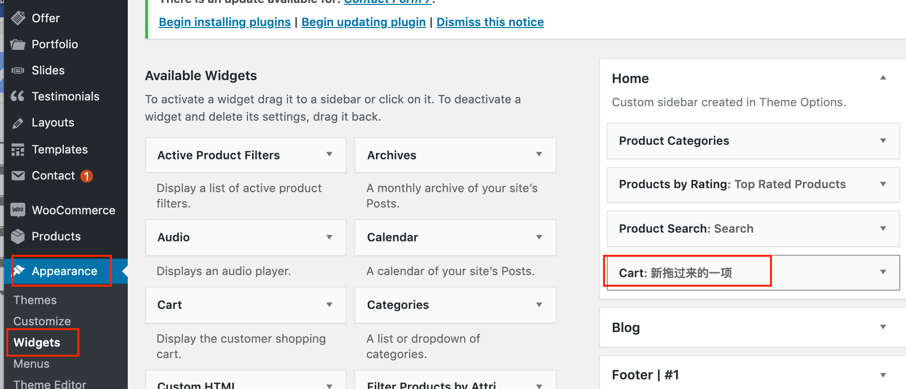 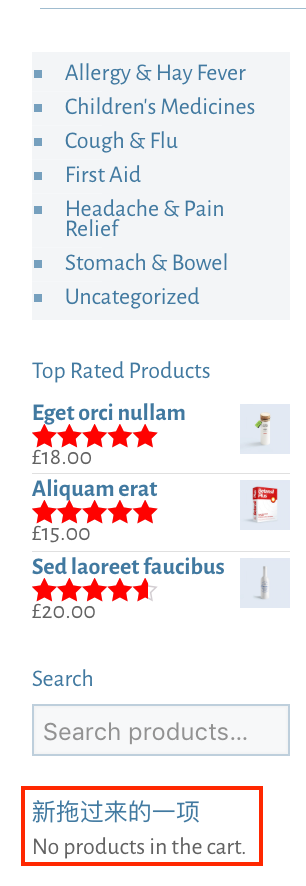
- 在"关于我们"页面增加侧边栏AboutUs示例:
- 在BeTheme > Theme Options > Sidebars中新建侧边栏
- 在Appearance > Widges中编辑侧边栏
- 编辑侧边栏时添加Muffin Menu菜单，菜单可以在Appearance > Menu中创建和编辑 注：页面企业文化和人才招聘需要设置Layout和所属的Sidebar，否则点击企业文化和人才招聘时会在新页面打开，而不是当前页面
管理页面层级
- BeTheme > Pages > 编辑某一页面 > Document > Page Attributes > Parent Page
- 假设把页面“人才招聘”“企业文化”的Parent Page设置为页面“关于我们”，则Pages显示如下：
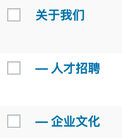
浏览器显示的网站标题
- Settings -> Site Title （网站名）
- Settings -> Tagline(浏览器显示的标题) 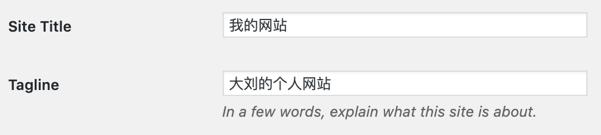
常见插件
- 说明：购买主题一般自动打包在里面有一些常用插件，主题里的插件升级不可以单独进行，即需要看主题是否提供了升级功能。主题本身什么时候给予了插件更新，这些插件才可以更新。说白了，这些插件是主题的捆绑插件(Bundled Plugins)。这些插件都可以在https://themeforest.net/的Code选项里找到。在主题里的每个Demo可能都需要不同的插件，点击Install，完成后Active激活即可。插件够用就可以，只安装必要插件即可。
- Revolution Slider: 幻灯片插件
- Contact Form7: 在线留言发邮件插件
- WooCommerce: 商城插件